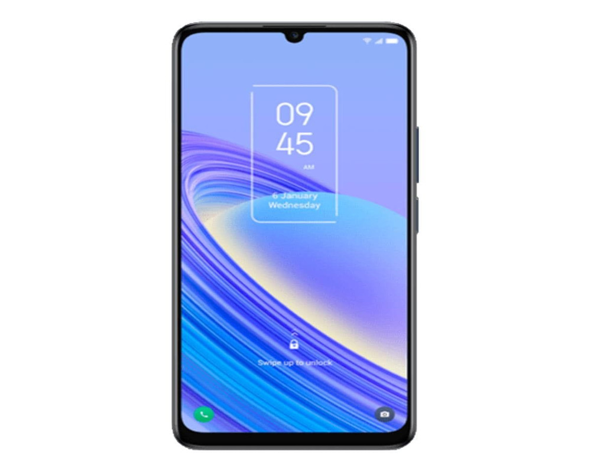

TCL 40 SE
El TCL 40 SE es un teléfono inteligente que cuenta con varias características destacadas.
- Pantalla: La pantalla del TCL 40 SE tiene un tamaño de 6.75 pulgadas con resolución HD+ y una tasa de refresco de 90Hz, lo que brinda una experiencia de visualización fluida y cómoda.
- Procesador: El teléfono funciona con un procesador MediaTek Helio G37, que ofrece un rendimiento equilibrado en el uso cotidiano con aplicaciones de redes sociales y en servicios de mensajería.
- Memoria RAM y Almacenamiento: El TCL 40 SE tiene 4GB o 6GB de memoria RAM y 128GB o 256GB de almacenamiento interno, que se puede ampliar mediante una tarjeta microSD hasta 1TB.
- Cámara: La cámara trasera es triple con un sensor principal de 50MP, un sensor macro de 2MP y un sensor de profundidad de 2MP, mientras que la cámara frontal es de 8MP.
- Batería: La batería del TCL 40 SE tiene una capacidad de 5010 mAh y soporte para carga rápida, lo que permite un entretenimiento ininterrumpido durante más de un día.
- Sistema Operativo: El teléfono corre Android 13, lo que ofrece una experiencia de usuario actualizada y segura.
- Conectividad y Seguridad: El TCL 40 SE cuenta con un conector USB tipo C, parlantes estéreo, lector de huellas y reconocimiento facial, lo que brinda una buena combinación de conectividad y seguridad.
$400